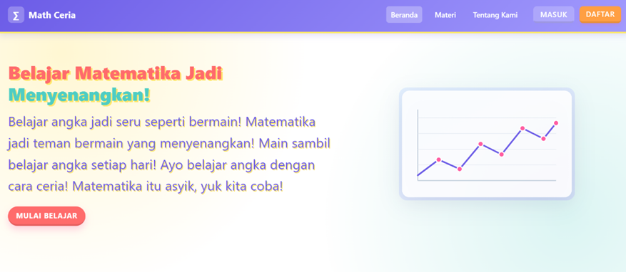

2025 — Sekarang
Pendidikan tinggi · S1
Teknik Informatika
STT Terpadu Nurul Fikri
Sedang ditempuhFokus pada pembuatan aplikasi web responsif, antarmuka intuitif, dan pengalaman pengguna yang luar biasa.
Kenali perjalanan dan minat saya di bidang teknologi.

Saya adalah mahasiswa dan Web Developer yang berfokus pada pengembangan antarmuka web yang bersih, responsif, dan mudah digunakan.
Selalu bersemangat mempelajari teknologi baru dan mengimplementasikannya ke dalam proyek nyata.
Selain pengembangan front-end, saya juga aktif mempelajari arsitektur kode yang efisien, optimasi performa web, serta prinsip UX/UI agar antarmuka tidak hanya menarik tetapi juga nyaman digunakan.
Saya selalu terbuka untuk peluang kolaborasi, proyek lepas (freelance), maupun diskusi seputar perkembangan teknologi web terkini.
Perjalanan akademik dan aktivitas kampus saya di bidang teknologi.
STT Terpadu Nurul Fikri
Sedang ditempuhSMK Amaliyah Jakarta
Mempelajari pencatatan transaksi, penyusunan laporan keuangan, administrasi, dan pengelolaan dokumen keuangan lembaga.
Himpunan Mahasiswa Teknik Informatika
Wadah mahasiswa untuk mengembangkan kompetensi di bidang informatika, berbagi wawasan, dan membangun kolaborasi melalui kegiatan akademik maupun kemahasiswaan di STT Terpadu Nurul Fikri.
Kemampuan teknis dan dasar perancangan yang saya kuasai.
Merancang antarmuka yang intuitif dengan wireframe dan prototipe untuk pengalaman pengguna yang lebih baik.
Membangun tampilan web responsif dan interaktif, serta menjalankan server portfolio sederhana dengan Node.js.
Mengandalkan komunikasi aktif, problem solving, dan manajemen waktu saat bekerja secara mandiri maupun tim.
Tiga proyek pilihan untuk memperlihatkan eksplorasi dan karya saya.

Halaman toko buah dengan katalog produk, navigasi kategori, dan area promosi untuk pengalaman belanja online yang nyaman.

Website edukasi yang mengajak siswa belajar matematika dengan suasana menyenangkan, dilengkapi navigasi materi interaktif.
Konsep website panduan destinasi wisata dengan informasi tempat, rekomendasi aktivitas, dan tampilan ramah perangkat seluler.
Punya ide proyek, peluang magang, atau ingin berdiskusi tentang teknologi web? Saya terbuka untuk terhubung.
Biasanya membalas dalam 24 jam